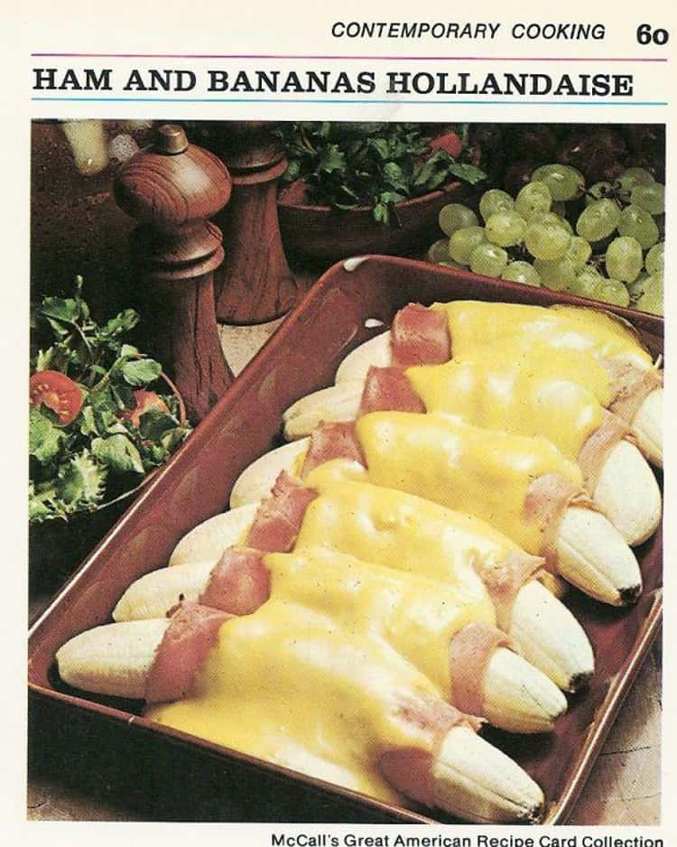

Ham and Bananas Hollandaise

What to expect
Not a fan of eggs? No need of them when we have banannas!
Ingredients
- 6 medium banannas
- Quarter cup lemon juice
- 6 thin slices boiled ham
- 1 and a half cups of Hollandaise sauce mix
- Quarter cup light cream
Steps
- Preheat oven to 400F. Lightly butter 2-quart, shallow baking dish.
- Peel bananas; sprinkle each with 1/2 tablespoon lemon juice, to prevent darkening.
- Spread ham slices with mustard. Wrap each banana in slice of ham. Arrange in single layer in casserole. Bake 10 minutes.
- Meanwhile, make sauce: In small saucepan, combine sauce mix with 1 cup water, 1 tablespoon lemon juice, and cream. Heat, stirring, to boiling; pour over bananas. Bake 5 minutes longer, or until slightly golden. Nice with a green salad for brunch or lunch. Makes 6 servings.
Pineapple - Glazed Ham
- 1 can (2 lb) boneless ham
- 1/4 cup dry white wine
Pineapple Glaze
- 1/2 cup pineapple preserves
- 1/2 teaspoon dry mustard
- Dash ground cloves
Steps
- Preheat oven to 350F. Place ham in small, shallow baking pan. Bake 10 minutes. Pour wine over ham. Bake 20 minutes longer. Remove from oven. Increase oven temperature to 450F.
- Meanwhile, make Pineapple Glaze: In small bowl, combine preserves, mustard, and cloves; mix well. Spread on top and sides of ham. Bake ham 12 to 20 minutes, or until glaze is slightly browned. Remove to serving platter. Garnish with maraschino cherries and parsley, if desired. Makes 6 servings.
Recipe Home